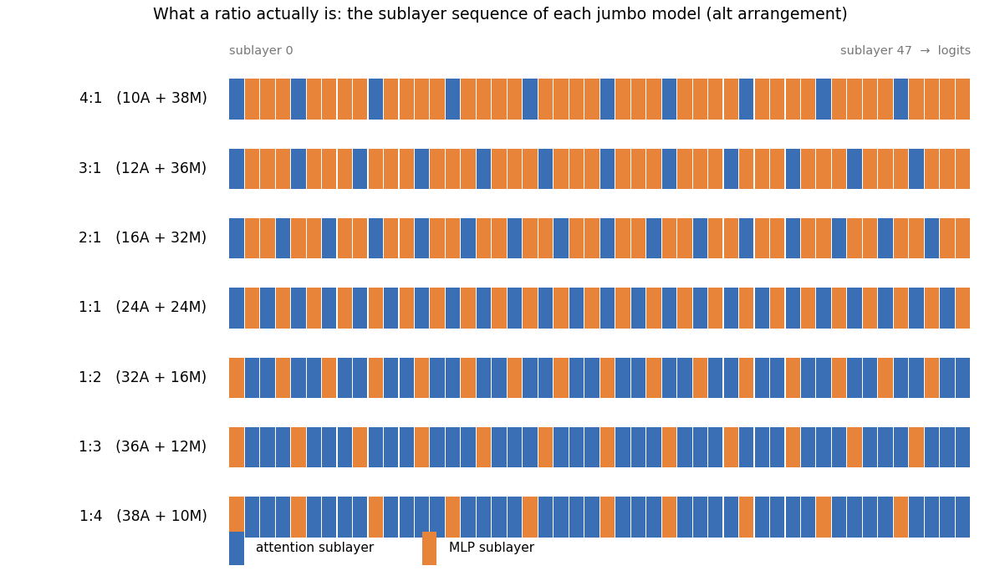
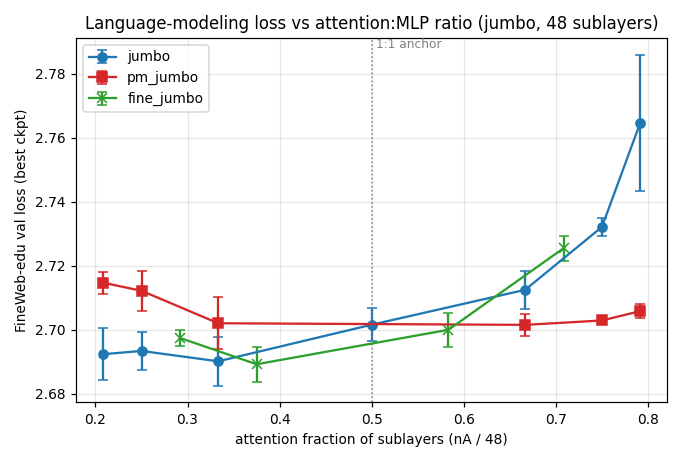
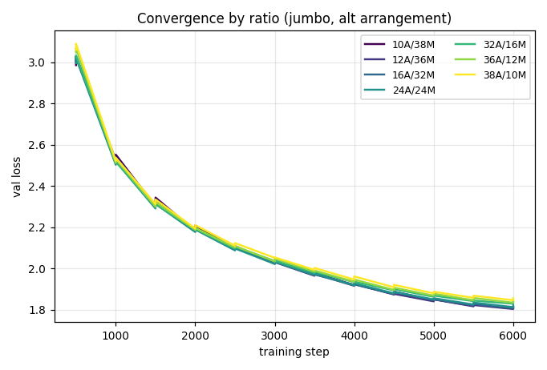
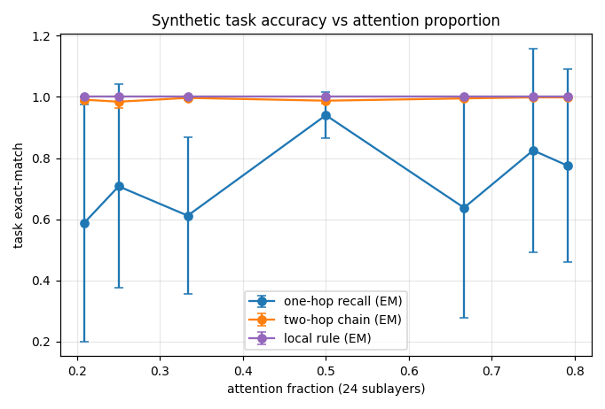
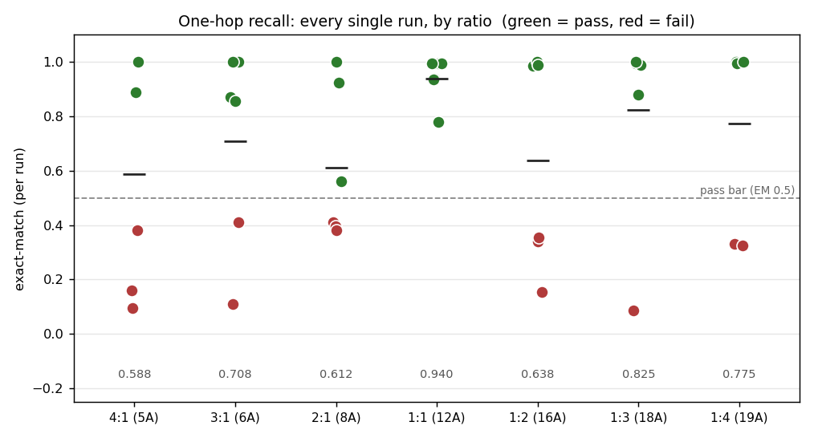
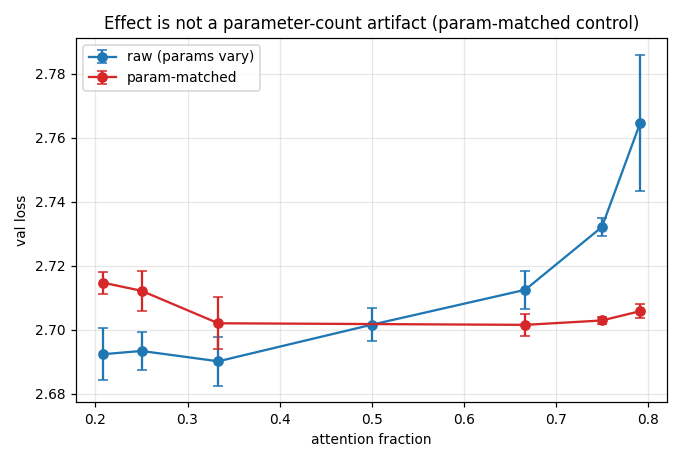
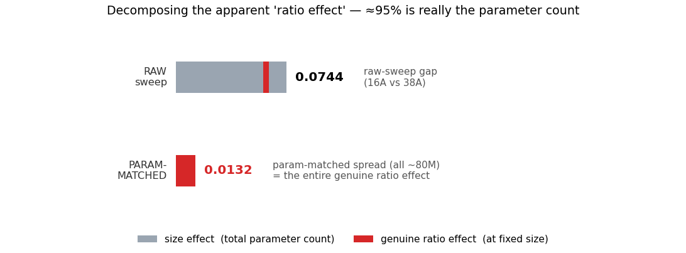
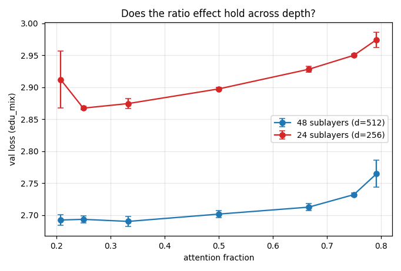
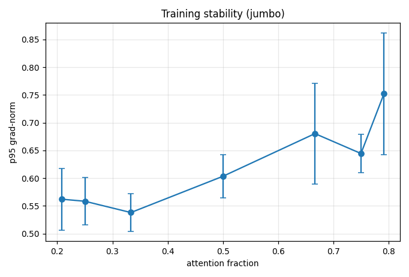

Ratio study · layout_schedule_2 · 330 runs · 4×H100
I took a 48-sublayer decoder, held everything else fixed, and swept only the attention : MLP split from 4:1 to 1:4 — then probed retrieval, and finally separated the ratio effect from the parameter-count effect that was hiding inside it.
Every decoder block in a conventional transformer does two things in turn: an attention sublayer (global, token-to-token mixing) and an MLP sublayer (token-local nonlinear transformation). With a 4× MLP expansion, roughly two-thirds of the sublayers are MLP and one-third are attention. I wanted to know what happens if you change that proportion on purpose.
The hypothesis I went in with (the one I most wanted to be true, and therefore most wanted to test honestly) is that conventional models over-allocate to token-local compute. Attention is what lets one token reach any other token, so the story goes: more attention → better retrieval and contextual integration → better language modelling, up to some optimal attention-heavy ratio, after which you run out of MLP capacity to actually transform features and performance degrades. The predicted shape is an inverted-U peaking on the attention-heavy side.
I was equally prepared for the null: MLP capacity matters more than people think; global communication alone can't compensate for weak feature transformation; the optimum sits at or below the conventional ratio. And I was prepared for a third outcome — that different tasks want different compositions, so no single ratio is "the" optimum.
So the study was designed to distinguish all three: inverted-U (attention-heavy peak), MLP-heavy monotone / flat, and task-dependent optima. The short version of what I found is in the box above; the long version follows.
First, concretely, what changing the ratio means. I model each block as running exactly one sublayer — attention or MLP — selected by a layout string of length 48. A "ratio" is just the count of each symbol. Here are the actual sequences I trained (the evenly-spread alt arrangement):
attention sublayer MLP sublayer — 48 cells, left to right = shallow to deep, then logits. Same width (d=512), same 8 heads, same d_ff per sublayer; only the count of each changes.

Now the reason this is a deceptively hard thing to test. An attention sublayer and an MLP sublayer are not the same size. With d=512 and a SwiGLU expansion of ~1376:
So every time I move one sublayer from MLP to attention, the model gets ~1M parameters and ~26M FLOPs/token lighter. Sweeping the ratio from 4:1 to 1:4 (holding the 48-sublayer total fixed) therefore changes the model from 95.0M → 65.2M parameters and from 585.7M → 450.8M FLOPs/token. The attention-heavy end is smaller and cheaper.
There is a second, subtler confound: where the attention sublayers sit. "16 attention + 32 MLP" can be evenly spread, clustered at the front, or clustered at the back, and those are different machines (front-loaded attention changes early feature extraction; back-loaded attention changes late integration). So I did not test one arrangement per ratio — I tested several (an evenly-spread alt plus fixed-seed random permutations) so that a ratio effect that survives arrangement changes is a ratio effect, not a position effect. §7 quantifies how large the position effect is.
The core grid. I fixed width (d=512), heads (8), per-sublayer expansion (SwiGLU d_ff=1376), context (256), data, steps, and optimizer, and varied only the A/M counts across the 48 sublayers:
| MLP:Attn | nAttn / nMLP | params (M) | FLOPs/token (M) | Δparams vs 1:1 |
|---|---|---|---|---|
| 4:1 | 10 / 38 | 95.0 | 585.7 | +18.6% |
| 3:1 | 12 / 36 | 92.9 | 576.1 | +16.0% |
| 2:1 (conventional) | 16 / 32 | 88.6 | 556.8 | +10.6% |
| 1:1 (anchor) | 24 / 24 | 80.1 | 518.3 | baseline |
| 1:2 | 32 / 16 | 71.6 | 479.7 | −10.6% |
| 1:3 | 36 / 12 | 67.3 | 460.5 | −16.0% |
| 1:4 | 38 / 10 | 65.2 | 450.8 | −18.6% |
Replication was deliberate, because the effect sizes I expected were small. Each ratio was trained with 3 seeds × 4 spatial arrangements = 12 runs (the 1:1 anchor got 15). That gives me a direct handle on the noise floor: the within-ratio standard deviation across seeds and layouts is ~0.008 in val loss (range 0.0028–0.0213). Any "effect" I claim below has to clear that bar. The core best–worst gap is 0.0744 — about 8.8× the noise floor, so the core ordering is not a seed fluke.
Around that core I built six supporting families, each aimed at a specific confound or question:
| family | what it changes | why | runs |
|---|---|---|---|
| ratio_jumbo | the core A/M sweep, d_ff fixed | the main answer | 87 |
| ratio_pm_jumbo | d_ff tuned per ratio → ~80M for every ratio | kill the size confound (§6) | 36 |
| ratio_depth24 | 24 sublayers, d=256 | does it hold at half depth? | 42 |
| ratio_fine_jumbo | fill the coarse gaps (14,18,28,34 A) | locate the plateau edge | 24 |
| ratio_jumbo_long | 12k steps on 5 anchor points | is the ordering a step-budget artifact? | 15 |
| ratio_synth_* | recall / 1-hop / local tasks, d=128 | the "attention = retrieval" probe | 126 |
330 runs total, dispatched across 4×H100 in parallel by a self-healing worker + watchdog (a dead or wedged run is detected, killed, and requeued; 0 permanent failures). Wall-clock ~15h for the whole study. Training data is the standard mix, edu_mix — a FineWeb-derived corpus (531M train / 5.2M val tokens, BPE-8192), curated from /data/susanket/text/corpus/fineweb-10b.txt and tokenized under /data/susanket/text/gpt/data/edu_mix. Every run writes its checkpoints, curves, and metrics under /data/susanket/text/gpt/runs/ratio_*/; all numbers in this post are regenerated from those run dirs by analyze.py.

| MLP:Attn | nA/nM | val_loss (mean) | σ | best ckpt | params (M) | FLOPs (M) |
|---|---|---|---|---|---|---|
| 4:1 | 10/38 | 2.6924 | 0.0081 | 1.8071 | 95.0 | 585.7 |
| 3:1 | 12/36 | 2.6934 | 0.0059 | 1.8081 | 92.9 | 576.1 |
| 2:1 | 16/32 | 2.6902 ← best | 0.0076 | 1.8044 | 88.6 | 556.8 |
| 1:1 | 24/24 | 2.7016 | 0.0051 | 1.8138 | 80.1 | 518.3 |
| 1:2 | 32/16 | 2.7125 | 0.0058 | 1.8220 | 71.6 | 479.7 |
| 1:3 | 36/12 | 2.7321 | 0.0028 | 1.8381 | 67.3 | 460.5 |
| 1:4 | 38/10 | 2.7646 ← worst | 0.0213 | 1.8683 | 65.2 | 450.8 |
Three things stand out, and they all point the same way:
(a) The shape is wrong for the hypothesis. There is no peak on the attention-heavy side. Instead: a flat, near-tie plateau on the MLP-heavy side (4:1, 3:1, 2:1 all within ~1σ of each other; the conventional 2:1 is the single best point), then a monotone, accelerating degradation as you add attention past 2:1. The step differences going attention-heavy (2:1→1:1→1:2→1:3→1:4) are +0.011, +0.011, +0.020, +0.033 — all positive, and growing. That is a clean monotone trend, not noise, and it is the opposite of the inverted-U I was hunting for.
(b) The signal is large relative to the noise. Within-ratio σ (the noise floor) is ~0.008; best–worst is 0.0744. The two attention-heavy extremes (36A, 38A) sit >4σ above the plateau. This is not a one-seed accident — it reproduces across all 12 runs per ratio.
(c) The worst config is also the least stable. 1:4 (38A/10M) has the highest variance (σ=0.0213, ~2× the plateau) — the attention-heavy models not only lose on average, they are less reproducible. And the gradient-norm traces confirm it: the attention-heavy end shows higher p95 gradient norms (0.75 at 38A vs 0.54–0.56 on the MLP-heavy side) and the one training spike in the whole core sweep lands on an attention-heavy config (36A). Attention-heavy is both slower and less stable.

The hypothesis was, in part, a retrieval story — attention does global token-to-token mixing, so "more attention should help retrieval." I tested that directly with three synthetic probes, each a different flavour of "find the right token": 1-hop (follow a pointer), local (a rule within a small window), and recall (recall a specific item from context). The two easy ones saturate and carry no signal; the recall task is where the ratio actually shows through.
| task | range of task EM across ratios | verdict |
|---|---|---|
| 1-hop (hop2) | 0.984 – 0.998 (flat) | saturated — no ratio difference |
| local | 1.000 (all) | saturated — no ratio difference |
| recall | 0.588 – 0.940, and bimodal | 1:1 is the only *reliable* split |


| ratio | per-run EM (n=6) | mean | σ | read |
|---|---|---|---|---|
| 4:1 (5A) | 0.095, 0.16, 0.38, 0.89, 1.0, 1.0 | 0.588 | 0.424 | bimodal, most failures |
| 3:1 (6A) | 0.11, 0.41, 0.855, 0.87, 1.0, 1.0 | 0.708 | 0.365 | bimodal |
| 2:1 (8A) | 0.38, 0.395, 0.41, 0.56, 0.925, 1.0 | 0.612 | 0.280 | bimodal |
| 1:1 (12A) | 0.78, 0.935, 0.94, 0.995, 0.995, 0.995 | 0.940 | 0.083 | reliable, all pass |
| 1:2 (16A) | 0.155, 0.34, 0.355, 0.985, 0.99, 1.0 | 0.637 | 0.394 | bimodal |
| 1:3 (18A) | 0.085, 0.88, 0.99, 0.995, 1.0, 1.0 | 0.825 | 0.366 | bimodal |
| 1:4 (19A) | 0.325, 0.33, 0.995, 1.0, 1.0, 1.0 | 0.775 | 0.347 | bimodal |
Read this carefully, because it is the cleanest task-dependence evidence in the study and it refutes the simple "attention = retrieval" story. If more attention helped retrieval, the attention-heavy ratios (1:2, 1:3, 1:4) should be the best and most reliable. They are not — they are bimodal, just like the MLP-heavy side. The pattern is not "more attention is better." It is "1:1 is the sweet spot": recall needs a specific balance of attention (global search) and MLP (feature transformation), and 1:1 is the only split that reliably has both. The MLP-heavy extreme (4:1) has the most failures, and the attention-heavy 1:2 is also bimodal — so it is "just enough of both," not "maximise attention."
And note the cross-task tension, which is the heart of the "task-dependent" branch: 2:1 is the best ratio for language modelling (Fig. 2) but bimodal/unreliable for recall (mean 0.612, three runs below the pass bar), while 1:1 — only slightly worse for LM (2.702 vs 2.690) — is the only reliable ratio for recall. Different tasks, different optimal compositions. There is no single universal ratio.
This is the section the whole study hinges on, so I'll be precise. The core sweep (§4) holds the 48-sublayer total fixed and varies the ratio. But because an MLP sublayer carries ~2× the parameters of an attention sublayer (§2), varying the ratio at fixed sublayer-count also varies the parameter count: the MLP-heavy end is 89–95M, the attention-heavy end 65–72M. So the 0.0744 "ratio effect" I measured could be:
To separate them, I ran the parameter-matched control: for each ratio I retuned the MLP expansion (d_ff) so that every ratio lands at the same ~80M total, then varied only the composition. If the ratio effect survives at fixed size, it is real. If it vanishes, the core-sweep effect was size all along.

| config | nA | nM | params (M) | d_ff | val_loss (mean, n=6) |
|---|---|---|---|---|---|
| pm 4:1 | 10 | 38 | 80.1 | 968 | 2.7147 |
| pm 3:1 | 12 | 36 | 80.1 | 1016 | 2.7122 |
| pm 2:1 | 16 | 32 | 80.0 | 1136 | 2.7020 |
| pm 1:2 | 32 | 16 | 80.0 | 1568 | 2.7015 ← best |
| pm 1:3 | 36 | 12 | 80.2 | 1992 | 2.7029 |
| pm 1:4 | 38 | 10 | 80.1 | 2440 | 2.7058 |
At fixed size, the ratio effect nearly vanishes. The spread across ratios is 0.0132 (best 32A at 2.7015, worst 10A at 2.7147) — on the order of the ~0.008 seed noise floor, and with no consistent direction (it's a shallow, noisy wiggle: 16A and 32A are both ~2.70, the extremes are slightly worse). Compare the core sweep's spread of 0.0744, where the same ratios span 65–95M. Holding size constant removes ~82% of the apparent effect. That is the finding that reframes everything.
I decomposed the gap explicitly to show where each bit comes from. Take the raw best (16A, 88.6M, 2.6902) vs raw worst (38A, 65.2M, 2.7646), total gap 0.0744:

Now contrast this with the recall task (§5), where the best ratio (1:1) is not the largest model — in fact the largest (4:1) is the worst (0.588). So for recall, the ratio effect is genuine and independent of size, the exact opposite of what the LM numbers say. That contrast is the whole story, compressed into one table:
| task | is the "optimal ratio" real? | what actually drives it |
|---|---|---|
| language modelling | No (at fixed size, ratio ≈ irrelevant) | total parameters (size) |
| retrieval (recall) | Yes (1:1 is the sweet spot) | the attention:MLP ratio itself |
A finding I don't trust is one that only holds at one depth, one grid resolution, and one step budget. I checked all three, plus training stability. All four support the core story.

| ratio | nA/nM | val_loss | params (M) |
|---|---|---|---|
| 4:1 | 5/19 | 2.9118 | 13.2 |
| 3:1 ← best | 6/18 | 2.8673 | 13.0 |
| 2:1 | 8/16 | 2.8745 | 12.5 |
| 1:1 | 12/12 | 2.8973 | 11.4 |
| 1:2 | 16/8 | 2.9281 | 10.4 |
| 1:3 | 18/6 | 2.9499 | 9.9 |
| 1:4 | 19/5 | 2.9743 | 9.7 |
At 24 sublayers the curve is actually cleaner — a near-monotone decline toward attention-heavy with the best point at 3:1 (6A/18M). The MLP-heavy-is-best, attention-heavy-is-worst ordering is reproduced at a different depth and width. (Note the absolute loss is higher here — 2.87 vs 2.69 — because these are smaller models, 10–13M vs 65–95M, which is itself a reminder that size dominates the LM numbers.)
I filled the coarse gaps (14, 18, 28, 34 attention) to locate the edge of the MLP-heavy plateau. Results: 14A=2.6975, 16A=2.6902, 18A=2.6892 (best), 28A=2.7000, 34A=2.7255. So the best point is 18A, essentially tied with the 16A core point (Δ=0.001); 14A is slightly worse but within ~1σ; and the curve degrades clearly on the attention-heavy side (28A is +0.011, 34A is +0.036 over the plateau). So the "optimal" region for LM is not a sharp point at exactly 2:1 — it is a broad plateau around 16–18A (MLP:Attn ≈ 2:1 down to ~1.7:1), and I should read "optimal" as that plateau, not a single ratio.
| ratio | nA/nM | val_loss @12k steps | best ckpt |
|---|---|---|---|
| 4:1 | 10/38 | 2.5534 | 1.6766 |
| 2:1 ← best | 16/32 | 2.5515 | 1.6762 |
| 1:1 | 24/24 | 2.5635 | 1.6875 |
| 1:2 | 32/16 | 2.5798 | 1.7004 |
| 1:4 | 38/10 | 2.6046 | 1.7202 |
Doubling the step budget (6k→12k) on the five anchor points preserves the ordering — MLP-heavy best, attention-heavy worst — and the spread is 0.0511, still well above noise. The cheaper attention-heavy models do not catch up with more steps, consistent with the convergence signature in Fig. 3 (they start worse and stay worse). So the LM ordering is not a step-budget artifact.

| ratio | alt | r0 | r1 | r2 | spread |
|---|---|---|---|---|---|
| 10A | 2.6973 | 2.6992 | 2.6831 | 2.6899 | 0.0162 |
| 12A | 2.6917 | 2.6969 | 2.6992 | 2.6858 | 0.0134 |
| 16A | 2.6951 | 2.6909 | 2.6796 | 2.6951 | 0.0156 |
| 24A | 2.7028 | 2.6977 | 2.7049 | 2.6998 | 0.0072 |
| 32A | 2.7177 | 2.7122 | 2.7167 | 2.7033 | 0.0143 |
| 36A | 2.7312 | 2.7306 | 2.7362 | 2.7303 | 0.0058 |
| 38A | 2.7431 | 2.7443 | 2.7840 | 2.7872 | 0.0442 |
The spatial arrangement of the sublayers is a secondary effect. For most ratios the spread across the four layouts is 0.006–0.016 (small, within a couple of σ). It is largest at the attention-heavy extreme (38A, spread 0.0442, where some placements are notably bad — r1 and r2 are ~0.04 worse than alt). So: the ratio is the dominant variable; position is a minor modifier, and it modifies the attention-heavy end the most. That is reassuring — it means my controlled ratio sweep is measuring the ratio, not accidentally measuring one lucky placement. If position were the real driver, the four layouts per ratio would have scattered randomly; they don't.
| Prediction I set out to test | Result |
|---|---|
| Attention-heavy outperforms conventional | Disproved. Attention-heavy is the worst side for LM (and unstable). |
| Optimum is at an attention-heavy ratio | Disproved. The "optimum" is MLP-heavy — but see the size effect below. |
| Non-linear inverted-U peaking attention-heavy | Disproved. Flat MLP-heavy plateau + monotone attention-heavy degradation (the mirror shape). |
| Task-dependence (retrieval wants a different split) | Supported (strong). Recall's optimum is 1:1, not the LM "optimum" of ~2:1. |
| MLP capacity matters more than anticipated | Refined. For LM it's total capacity (param count), not specifically MLP capacity — the split itself barely matters at fixed size. |
Does a specific optimal ratio exist? For language modelling, no — the apparent "optimal ratio" is a size effect. For retrieval, yes — 1:1 is a genuine, size-independent optimal ratio.
Across both tasks the relationship is also asymmetric, and I think that is the most durable single finding here: you can remove attention (move toward more MLP) with little cost — 4:1, 3:1, 2:1 are all within noise of each other on LM — but you cannot add attention (move toward less MLP) without paying, in both LM loss and, sharply, in retrieval reliability. MLP-heavy is the safe side; attention-heavy is the costly side.
Interpretation. The load-bearing work that looks like "MLP capacity" is actually total capacity (parameter count) for language modelling. At a fixed size, how you split it between attention and MLP matters far less for LM than the hypothesis assumed — the model can absorb a wide range of compositions. But for retrieval the split itself matters: a balanced 1:1 reliably delivers the global-search capability, while both the MLP-heavy and the attention-heavy extremes fail on some seeds. Conventional wisdom is right that you need sufficient capacity; it is wrong to think the attention:MLP ratio is the key dial for LM. For LM it is the size dial.
Because the effect sizes are small, I want to be explicit about what could have fooled me, and what I did about each. This is the part I'd most want a reviewer to scrutinise.
| confound | why it's a threat | how I handled it |
|---|---|---|
| size (param count) | MLP-heavy = more params; "ratio effect" could be "bigger model" | Parameter-matched control (~80M for every ratio). Effect drops 0.0744→0.0132; decomposed as ~95% size (§6). |
| FLOPs/compute | attention-heavy is cheaper; a cheaper model could undertrain at equal steps | Same step budget for all; long-training (12k steps) shows the ordering is preserved, cheaper configs do not catch up (§7.3). |
| arrangement / position | where A's sit (front/back) could drive the result, not the ratio | 4 layouts per ratio; ratio is dominant, position is a small modifier, largest at attention-heavy end (§7.4). |
| depth scale | effect could be specific to 48 sublayers | Depth ablation at 24 sublayers (d=256) — ordering reproduced (§7.1). |
| grid resolution | the "plateau" could be an artifact of coarse ratios | Finer grid (14/18/28/34 A) — plateau confirmed, edge located (§7.2). |
| seed / init variance | a one-seed fluke could be read as a ratio effect | 3 seeds × 4 layouts; noise floor measured (~0.008); all claimed effects are >1σ, core is ~8.8σ. |
| task saturation | easy probes (1-hop, local) could mask a real ratio effect | Used a harder probe (recall) that doesn't saturate; the two easy ones confirmed flat and set aside as non-informative (§5). |
| probe scale | recall runs are small (d=128, ~2–3M) vs LM (d=512) | Honest caveat: the recall effect is demonstrated at small scale; the size-independence claim rests on best≠largest within that family, not on a cross-scale match. |
What I could not fully rule out, and am reporting as open:
Every number in this post is derived from the run dirs above by analyze.py; re-run bash finalize.sh and the tables, summary, and figures regenerate from the checkpoints. The per-run values (e.g. the recall dot plot in Fig. 5) are the raw per-seed accuracies from all_runs.json, not smoothed means — the bimodality is in the individual runs.